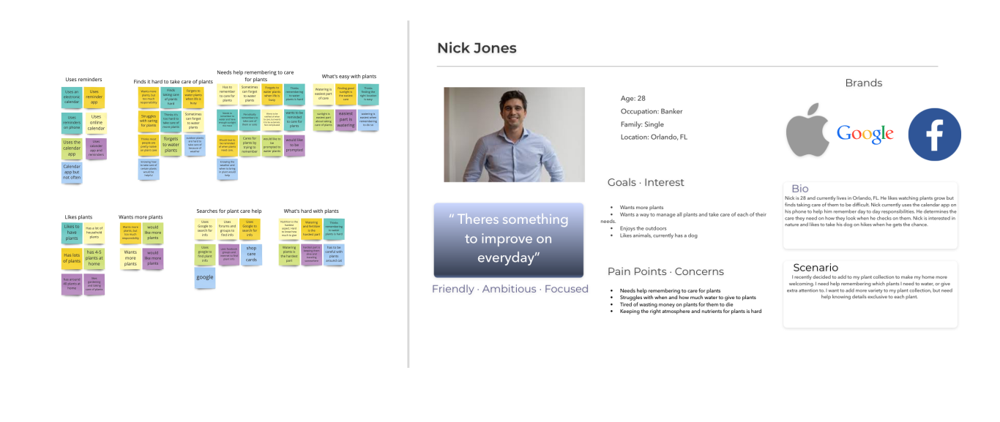
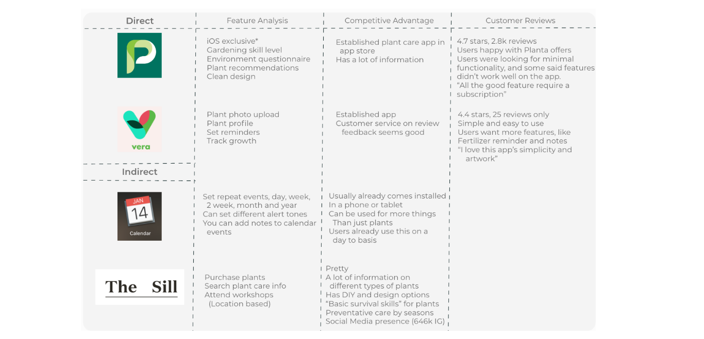
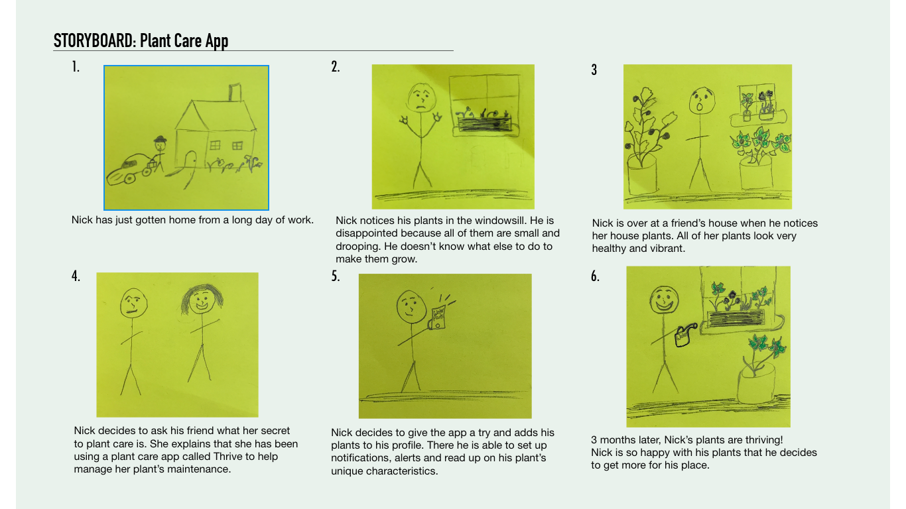
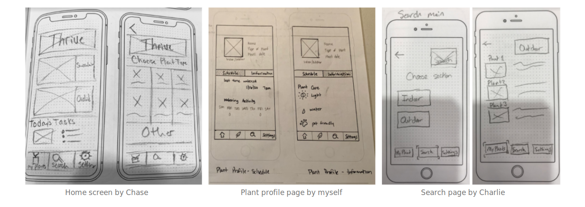

Overview
Design Question:
How can we design an app that will help users keep up with the maintenance of taking care of plants?
Solution
A mobile app to help users manage plant care schedules, while also providing information on how to take care of different plants.
My Role
UX Researcher
UI Designer
Timeline
January 9, 2020 - January 28, 2020
Team Members
Katherine Arias, Chase Hart, Charlie Malueg
Tools
Google Drive
Miro
Adobe XD
Flowmapp
Trello
Summary
This project was heavily based on user research. My team and I started off with making a research plan with interview questions and a survey. We distributed the survey, and proceeded to find plant owners who would be willing to sit down with us for a 1 on 1 interview. After we acquired our data, we analyzed it to figure out what users needed out of a plant care app. We did a competitor analysis and analyzed our research data in an affinity diagram. My team and I all drew up paper prototypes and came together to pick which parts of each we liked. After choosing which parts we liked, we combined them on paper and tested it on users. Once we received feedback on our paper-prototype, we created a lo-fi wireframe, including anything we left out from our paper prototypes. We tested our prototypes and iterated accordingly. In the end we had a mid-fi prototype to present.
My Contribution
I conducted about 3 interviews for the qualitative data. I also completed our competitor analysis and picked which points to highlight that would benefit us in our design. Everyone on my team created sketches for the UI design. I then contributed to the basic colors we would use in our interface and the design of our onboarding. I, along with my teammates, conducted usability testing on our app and then pin pointed which parts in our design we could iterate on.
Design Outcome

Process
1. During the user interviews &
survey we wanted to get an
idea of what aspects of plant care were most important to users. We also wanted to
identify what users felt were the most challenging aspects of plant care.

2. After collecting data, we decided to create an affinity
diagram to be able to combine and analyze the information.

3. My team then decided to do a brainstorming activity and
ideate important features for our app. We did an “I Like, I Wish, What if” activity and
a feature prioritization matrix.

4. We conducted a competitor
analysis and I organized it into a
chart to determine our competitor's features and how our features would set us apart. We
chose the competitors to analyze from feedback received from the people we interviewed.

5. We created a storyboard and user
journey map to help us
visualize how users would discover, use our product and become loyal customers.

6. After creating a user flow
diagram we started doing
sketches for the paper-prototype. Each member of the team
created their own sketches. We
then came together to choose which pages we liked for each feature and condense down to
one prototype. We then decided to do a few usability
tests to determine any issues
before we went further into prototyping.

7. Our final step was to make iterations from our paper
prototype usability test. We applied our results to our mid-fidelity prototype. We then
tested our design’s usability one more time. We recorded the results and came up with
proposed solutions.

* My team and I were approached about featuring this project on marketing
material for the bootcamp we attended as an example of UX/UI work. While working on
this project I also added a little succulent to my home while visiting a local plant shop.